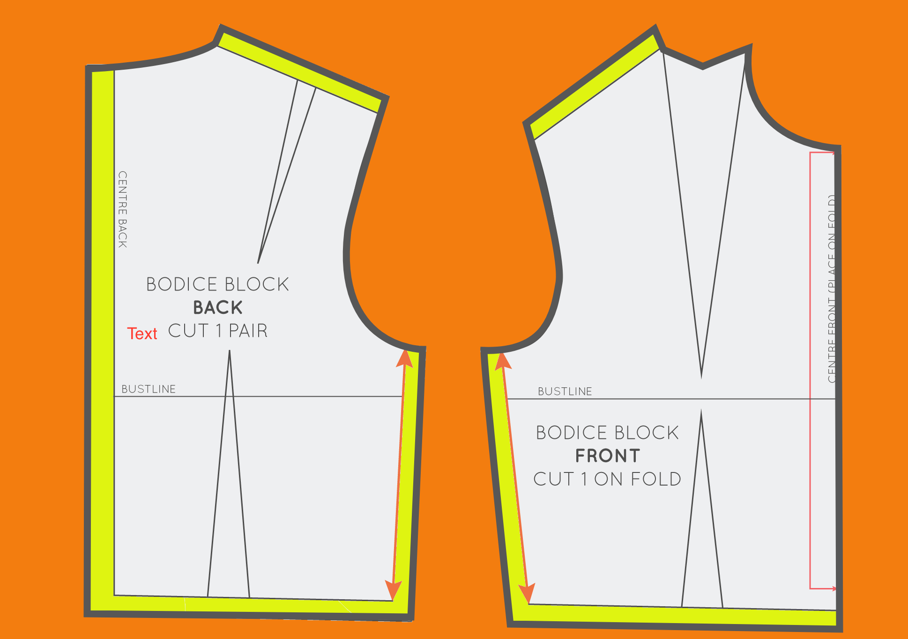

DIFFERENCE BETWEEN MARGIN, PADDING AND BORDER
BOX MODEL
In CSS, the term "box model" is used when talking about design and layout. The CSS box model is essentially a box that wraps around every HTML element. It consists of: margins, borders, padding, and the actual content. Bacically, it's a our fabric where we place our patterns.
Margin
Margin is the space between the border and the next element of your design. Think of the space outside the border and between it and the other elements. This is all the margin. Margin goes around all all sides of our pattern and you can target and change the margin for each side. Luckily, here, we can leave as much margin as we want without wasting our fabric!
Padding
Padding is the space that’s inside the element between the element and the border. Padding goes around all the sides of the content and you can target and change the padding for each side (just like a margin). So looking at a pattern it would be our seam allowance. We can either not add any at all or add as much as needed.
Border
The border-style shorthand CSS property sets the line style for all four sides of an element's border. In our case it will be a cutting line. You can change the style of the border as well, making it either solid or dotted, dashed or doubled, just as you would making pattern and marking the stitching line. Even though in case of css it's for beauty only and doesn't have any value behind it.

.jpg)